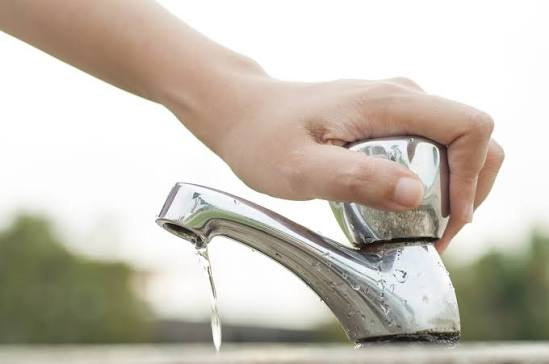
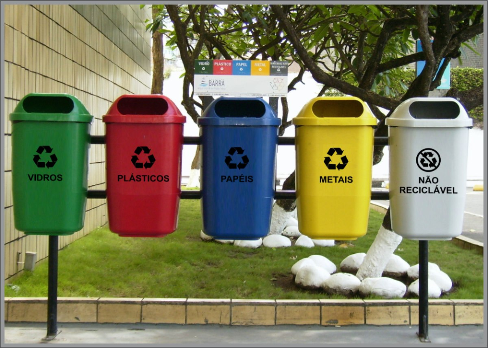
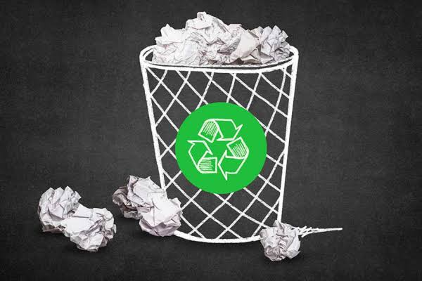
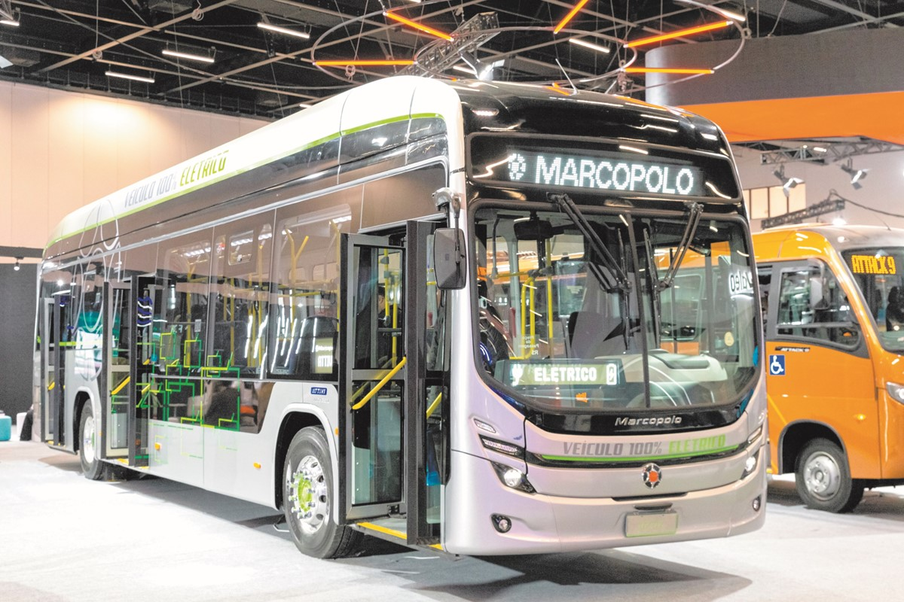

Desligar as luzes e os aparelhos eletrônicos quando não estiverem sendo utilizados.
Economizar energia significa evitar o uso desnecessário de eletricidade. Podemos fazer isso apagando as luzes ao sair de um ambiente, desligando computadores e aparelhos eletrônicos que não estão sendo utilizados e aproveitando a iluminação natural. Além de reduzir os gastos, essa atitude ajuda a diminuir os impactos ambientais causados pela produção de energia.
Fechar torneiras corretamente e utilizar sensores para evitar desperdícios.
A água é um recurso essencial para a vida e deve ser utilizada de maneira consciente. Algumas atitudes simples são fechar a torneira enquanto escovamos os dentes, consertar vazamentos e evitar banhos muito demorados. Tecnologias como sensores e torneiras automáticas também podem ajudar a controlar o consumo e diminuir o desperdício.

Separar papel, plástico, vidro e metal para facilitar a reciclagem.
A coleta seletiva consiste em separar os resíduos de acordo com seu tipo, como papel, plástico, vidro e metal. Essa separação facilita o trabalho das empresas e cooperativas de reciclagem, permitindo que materiais que seriam descartados possam ser reaproveitados. Dessa forma, reduzimos a quantidade de lixo enviada aos aterros e ajudamos a preservar os recursos naturais.

Utilizar documentos digitais, trabalhos online e formulários eletrônicos sempre que possível.
Reduzir o consumo de papel é uma forma de diminuir o desperdício e preservar árvores utilizadas na produção desse material. Sempre que possível, podemos utilizar documentos digitais, trabalhos online, formulários eletrônicos e enviar arquivos pela internet. Quando a impressão for realmente necessária, é possível utilizar os dois lados da folha.

Utilizar bicicletas, caminhar, usar transporte público ou compartilhar caronas para diminuir a poluição.
Os meios de transporte também podem contribuir para a poluição do ar. Para diminuir esse impacto, podemos caminhar, andar de bicicleta, utilizar transporte público ou compartilhar caronas. Essas alternativas ajudam a reduzir a quantidade de veículos nas ruas, o consumo de combustíveis e a emissão de gases poluentes.
